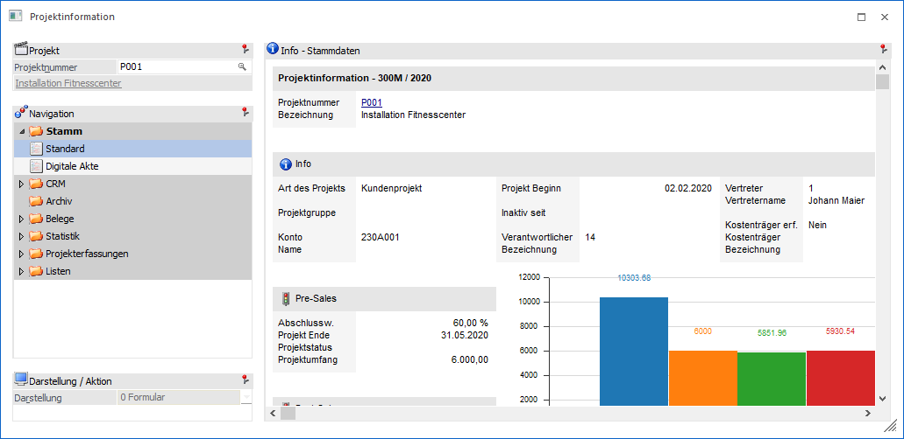
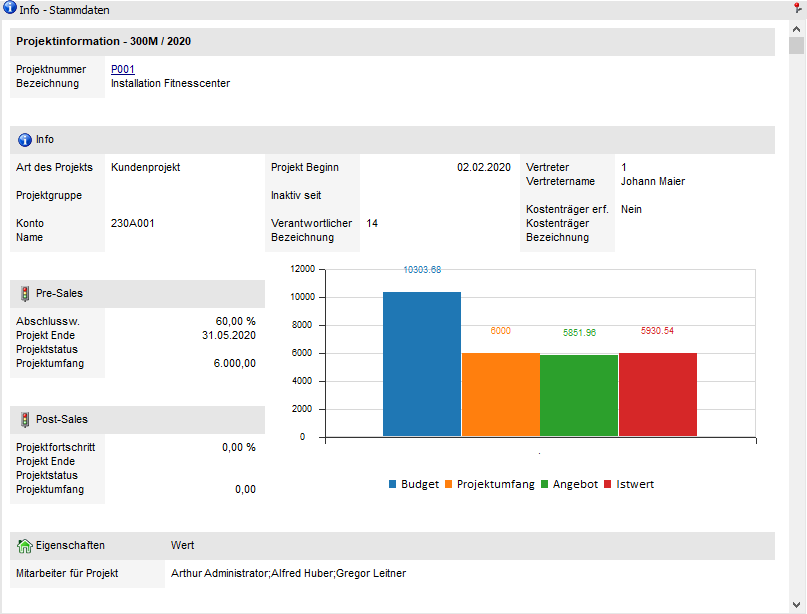

In der Ansicht "Standard" werden die Stammdaten des Projekts dargestellt.

Die Ansicht besteht aus dem folgenden Info-Element:
ü Info - Stammdaten
Info - Stammdaten

An dieser Stelle werden die Stamm- und wichtigsten Bewegungsdaten des Projekts angezeigt.